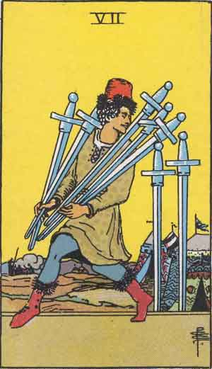

Seven of Swords

Upright
Betrayal, Deception, Getting Away With It
Use caution when using cunning. You know yourself and you suck at it. If you have had to go 'behind the back' to get what you want, is it even worth having? Encourage others to be candid with you. Can you view feedback as a gift? Feedback from anyone?
- Being betrayed hurts. Let the pain remind you to stay true to your commitments.
- Avoid building yourself up by breaking others down.
- There is only one shortcut and it is kindness.
- Don't try to be funny; Try to be nice.
Reversed
Escape, Clearing Conscience, Reveal
Show everyone your most authentic self. Can you embrace radical honesty? Do not make a dishonest decision. Retire from false roles you were playing. Put in the work to build healthy patterns. Follow thru when the timing is right. Do not get trapped in a fear of unfamiliarity. Beware imposter syndrome! Do not listen to fear talking unless you are confronting it! Get out of your head, you have what you need. Get real with where you are and go head-on!